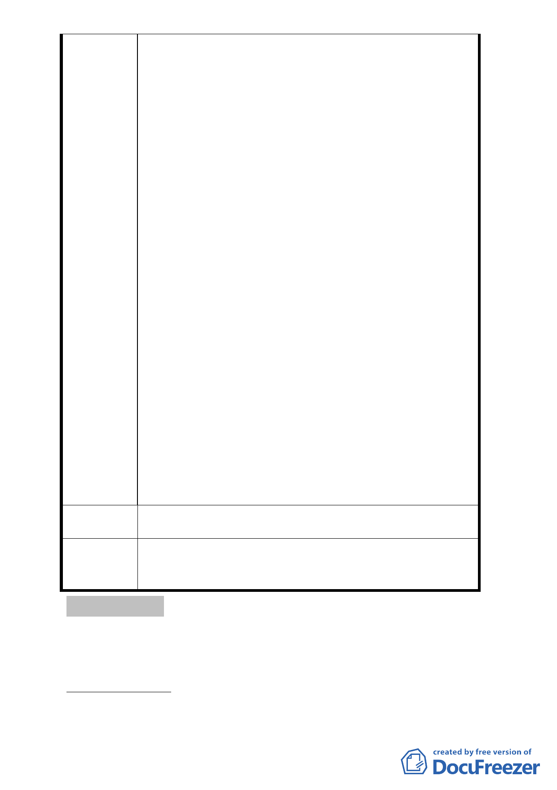

巷、58巷所圍完整街廓，除光復南路46巷32、34號為7層建
築、光復南路58巷29號為5層建築，並未滿30年外，其餘建
築均為30年以上，4層樓以下之老舊建築物。都市更新的目
的不就是要改善老舊建物的居住安全、改善整體都市環境
嗎?而且完整街廓或較大面積的都市更新獎勵也較高。而
「臺北市松山區延吉段一小段585地號等7筆土地自行劃定
更新單元案」，僅以國有土地占大多數的基地範圍申請都
市更新，明顯想要占國有土地及私有土地的便宜。
若排除街角未達30年期的7層、5層建築物，剩下的土地形
狀如何有較佳的建築配置?(詳附圖)又有那家建設公司願
意辦理都市更新 ? 甚者，永遠無法更新，只有任其破敗，
也形成街廓一半為豪宅，緊鄰的另一半為逐漸衰敗的建築
物。我們想，這應該不是貴單位所希望的結果，也不是都
市更新立法的本意。
我們希望貴單位能在都市環境整體改善的宏觀思考，及「都
市更新事業範圍內國有土地處理原則」規定下，對於「臺
北市松山區延吉段一小段585地號等7筆土地自行劃定更新
單元案」，能審慎評估其對住戶的公平、對都市的公益貢
獻度，再次思考該案的合理性，以免日後相鄰土地無法辦
理都市更新時，貴單位成為攻擊、卸責的對象，甚者，遭
到圖利特定建商的指控。再次深望貴單位聽到我們的心
聲，並以照顧多數人的福祉為念。
建 議 辦 法 （同上）
一、所提意見係屬權利變換議題與現階段更新單元之劃定
委員會決議
應分開處理。
二、本案更新單元劃定範圍照案通過。
討論事項 十一
案名：劃定臺北市文山區木柵段一小段 912 地號等 29 筆土地為更
新單元
案情概要說明：
一、本案位於文山區秀明路一段以南、久康街以東、久康街 105
- 15 -